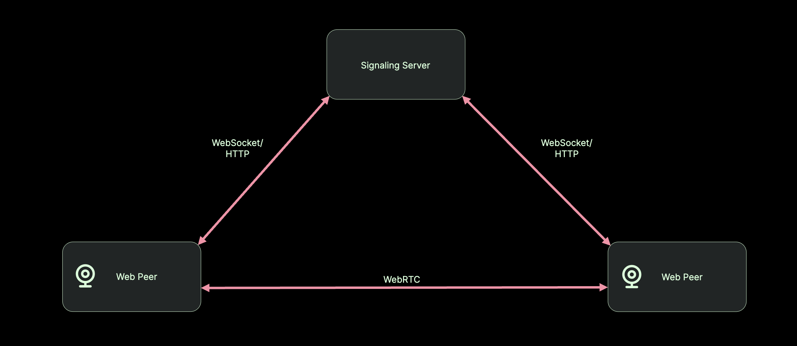
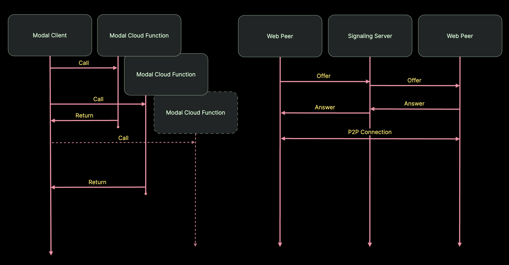
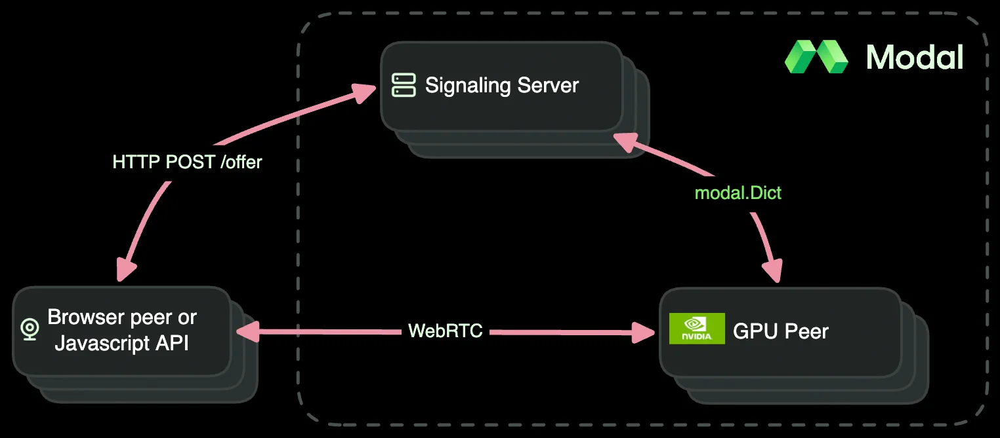

Real-time object detection with WebRTC and YOLO
This example demonstrates how to architect a serverless real-time streaming application with Modal and WebRTC. The sample application detects objects in webcam video with YOLO.
See the clip below from a live demo of this example in a course by Kwindla Kramer, WebRTC OG and co-founder of Daily.
You can also try our deployment here.
What is WebRTC?
WebRTC (Web Real-Time Communication) is an IETF Internet protocol and a W3C API specification for real-time media streaming between peers
over internets or the World Wide Web.
What makes it so effective and different from other bidirectional web-based communication protocols (e.g. WebSockets) is that it’s purpose-built for media streaming in real time.
It’s primarily designed for browser applications using the JavaScript API, but APIs exist for other languages.
We’ll build our app using Pipecat’s SmallWebRTCTransport.
What makes up a WebRTC application?
A simple WebRTC app generally consists of three players:
- a peer that initiates the connection,
- a peer that responds to the connection, and
- a server that passes some initial messages between the two peers.
First, one peer initiates the connection by offering up a description of itself - its media sources, codec capabilities, Internet Protocol (IP) addressing info, etc - which is relayed to another peer through the server. The other peer then either accepts the offer by providing a compatible description of its own capabilities or rejects it if no compatible configuration is possible. This process is called “signaling” or sometimes the “negotiation” in the WebRTC world, and the server that mediates it is usually called the “signaling server”.
Once the peers have agreed on a configuration there’s a brief pause to establish communication… and then you’re live.

A basic WebRTC app architectureObviously there’s more going on under the hood. If you want to get into the details, we recommend checking out the RFCs or a more-thorough explainer. In this document, we’ll focus on how to architect a WebRTC application where one or more peer is running on Modal’s serverless cloud infrastructure.
If you just want to quickly get started with WebRTC for a small internal service or a hack project, check out our FastRTC example instead.
How do I run a WebRTC app on Modal?
Modal turns Python code into scalable cloud services. When you call a Modal Function, you get one replica. If you call it 999 more times before it returns, you have 1000 replicas. When your Functions all return, you spin down to 0 replicas.
The core constraints of the Modal programming model that make this possible are that Function Calls are stateless and self-contained. In other words, correctly-written Modal Functions don’t store information in memory between runs (though they might cache data to the ephemeral local disk for efficiency) and they don’t create processes or tasks which must continue to run after the Function Call returns in order for the application to be correct.
WebRTC apps, on the other hand, require passing messages back and forth in a multi-step protocol, and APIs spawn several “agents” (no, AI is not involved, just processes) which do work behind the scenes - including managing the peer-to-peer (P2P) connection itself. This means that streaming may have only just begun when the application logic in our Function has finished.

Modal's stateless programming model (left) and WebRTC's stateful signaling (right)To ensure we properly leverage Modal’s autoscaling and concurrency features, we need to align the signaling and streaming lifetimes with Modal Function Call lifetimes.
The architecture we recommend for this appears below.

A clean architecture for WebRTC on ModalIt handles passing messages between the client peer and the signaling server using
HTTP (POST /offer) within a single Function Call.
(Modal’s Web layer maps HTTP onto Function Calls, details here).
We .spawn the cloud peer inside the /offer endpoint
and pass the SDP offer through a modal.Dict.
The signaling request returns as soon as the GPU peer publishes an SDP answer. And when the P2P connection has been closed, we’ll return from the call to the cloud peer. That way, our WebRTC application benefits from all the autoscaling and concurrency logic built into Modal that enables users to deliver efficient cloud applications.
Since Pipecat’s SmallWebRTCTransport handles the aiortc peer connection, ICE, and media tracks,
the application code only has to implement the logic to receive video frames, run YOLO, and send annotated frames back.
Decorate the GPU peer with app.cls and Modal lifetime hooks, and you’re ready to deploy on Modal.
Detecting objects in webcam footage
For our WebRTC app, we’ll take a client’s video stream, run a YOLO object detector on it with an A100 GPU on Modal, and then stream the annotated video back to the client. With this setup, we can achieve inference times between 2-4 milliseconds per frame and RTTs below video frame rates (usually around 30 milliseconds per frame).
Let’s get started!
Setup
We’ll start with a simple container Image and then
- set it up to properly use TensorRT and the ONNX Runtime, which keep latency minimal,
- install the necessary libs for processing video,
opencvandffmpeg, and - install Pipecat’s WebRTC extra plus the necessary Python packages.
import asyncio
import os
import time
from pathlib import Path
import modal
py_version = "3.12"
tensorrt_ld_path = f"/usr/local/lib/python{py_version}/site-packages/tensorrt_libs"
VIDEO_WIDTH = 640
VIDEO_HEIGHT = 480First-run YOLO download + ONNX/TRT graph build can take a few minutes on an empty volume; cached cold starts are ~15-20s. Bound the /offer wait either way.
ANSWER_TIMEOUT_SECS = 300.0
MINUTES = 60
video_processing_image = (
modal.Image.debian_slim(python_version=py_version) # matching ld path
# update locale as required by onnx
.apt_install("locales")
.run_commands(
"sed -i '/^#\\s*en_US.UTF-8 UTF-8/ s/^#//' /etc/locale.gen", # use sed to uncomment
"locale-gen en_US.UTF-8", # set locale
"update-locale LANG=en_US.UTF-8",
)
.env({"LD_LIBRARY_PATH": tensorrt_ld_path, "LANG": "en_US.UTF-8"})
# install system dependencies
.apt_install("python3-opencv", "ffmpeg")
# install Python dependencies
.uv_pip_install(
"pipecat-ai[webrtc]==1.5.0",
"fastapi==0.115.12",
"huggingface-hub[hf_xet]==0.30.2",
"onnxruntime-gpu==1.21.0",
"opencv-python==4.11.0.86",
"tensorrt==10.9.0.34",
"torch==2.7.0",
)
)Cache weights and compute graphs on a Volume
We also need to create a Modal Volume to store things we need across replicas — primarily the model weights and ONNX inference graph, but also a few other artifacts like a video file where we’ll write out the processed video stream for testing. For more on storing model weights on Modal, see this guide.
The very first time we run the app, downloading the model and building the ONNX inference graph will take a few minutes. After that, we can load the cached weights and graph from the Volume, which reduces the startup time to about 15 seconds per container.
CACHE_VOLUME = modal.Volume.from_name("webrtc-yolo-cache", create_if_missing=True)
CACHE_PATH = Path("/cache")
cache = {CACHE_PATH: CACHE_VOLUME}
app = modal.App("example-webrtc-yolo")Implement YOLO object detection as a Pipecat GPU peer
Our application needs to process an incoming video track with YOLO and return an annotated video track to the source peer.
To implement the GPU peer, we need to:
- Decorate our class with
@app.cls. We provision it with an A100 GPU. - Load YOLO in
@modal.enter()so it happens once per container. - Implement
run_pipeline. This is where we wire Pipecat’sSmallWebRTCTransportto aYOLOProcessorthat annotates each frame and returns it to the source peer. The pipeline is three stages:transport.input()→YOLOProcessor→transport.output().
We haven’t talked about TURN servers, but just know that they’re necessary if you want to use WebRTC across complex (e.g. carrier-grade) NAT or firewall configurations. Free services have tight limits because TURN servers are expensive to run (lots of bandwidth and state management required). STUN servers, on the other hand, are essentially just echo servers, and so there are many free services available. If you don’t provide TURN servers you can still serve your app on many networks using any of a number of free STUN servers for NAT traversal.
ICE servers are passed through the signaling modal.Dict.
STUN mode needs no credentials and works on many networks.
If STUN isn’t enough, TURN mode uses the free Open Relay TURN server via a small CPU
Function that mounts a Modal Secret called turn-credentials (create the Secret here after
signing up here).
For production or stubborn NATs, consider a managed provider like Daily that operates TURN for you.
We also use the @modal.concurrent decorator to allow multiple instances of our peer to run on one GPU.
Setting the Region
Much of the latency in Internet applications comes from distance between communicating parties —
the Internet operates within a factor of two of the speed of light, but that’s just not that fast.
To minimize latency under this constraint, the physical distance of the P2P connection
between the webcam-using peer and the GPU container needs to be kept as short as possible.
We’ll use the region parameter of the cls decorator to set the region of the GPU container.
You should set this to the closest region to your users.
See the region selection guide for more information.
@app.cls(
image=video_processing_image,
gpu="A100-40GB",
volumes=cache,
region="us-east", # set to your region
timeout=30 * MINUTES,
)
@modal.concurrent(
target_inputs=2, # try to stick to just two peers per GPU container
max_inputs=3, # but allow up to three
)
class ObjDet:
@modal.enter()
def load_model(self):
self.yolo_model = get_yolo_model(CACHE_PATH)
@modal.method()
async def run_pipeline(self, d: modal.Dict):
from pipecat.pipeline.pipeline import Pipeline
from pipecat.pipeline.worker import PipelineWorker
from pipecat.transports.base_transport import TransportParams
from pipecat.transports.smallwebrtc.connection import (
IceServer,
SmallWebRTCConnection,
)
from pipecat.transports.smallwebrtc.transport import SmallWebRTCTransport
from pipecat.workers.runner import WorkerRunner
offer = await d.get.aio("offer")
ice_servers = [
IceServer(**ice_server) for ice_server in await d.get.aio("ice_servers")
]
webrtc_connection = SmallWebRTCConnection(ice_servers)
await webrtc_connection.initialize(sdp=offer["sdp"], type=offer["type"])
transport = SmallWebRTCTransport(
webrtc_connection=webrtc_connection,
params=TransportParams(
audio_in_enabled=False,
audio_out_enabled=False,
video_in_enabled=True,
video_out_enabled=True,
video_out_is_live=True,
video_out_width=VIDEO_WIDTH,
video_out_height=VIDEO_HEIGHT,
),
)
pipeline = Pipeline(
[
transport.input(),
get_yolo_processor(self.yolo_model),
transport.output(),
]
)
# Pipecat defaults assume a voice agent (idle cancel on missing speech frames,
# RTVI to the client). This is a video-only pipeline with a plain browser client.
worker = PipelineWorker(
pipeline,
idle_timeout_secs=None,
enable_rtvi=False,
enable_turn_tracking=False,
)
async def end_session(reason: str):
print(f"Video Processor connection {webrtc_connection.pc_id}: {reason}")
await worker.cancel()
@transport.event_handler("on_client_connected")
async def on_client_connected(transport, client):
print(
f"Video Processor connection {webrtc_connection.pc_id}: client connected"
)
await transport.capture_participant_video("camera")
@transport.event_handler("on_client_disconnected")
async def on_client_disconnected(transport, client):
await end_session("client disconnected")
@webrtc_connection.event_handler("failed")
async def on_failed(connection):
await end_session("connection failed")
@webrtc_connection.event_handler("closed")
async def on_closed(connection):
await end_session("connection closed")
answer = webrtc_connection.get_answer()
if answer is None:
raise RuntimeError("Pipecat produced no SDP answer after initialize()")
await d.put.aio("answer", answer)
runner = WorkerRunner(handle_sigint=False)
await runner.add_workers(worker)
await runner.run()Implement a signaling server
The signaling server is much simpler.
It serves the browser UI and POST /offer. On each offer it spawns ObjDet.run_pipeline and waits for the SDP answer on a modal.Dict.
The server is the source of ICE config: clients POST ice_server_type (stun or turn) with the SDP offer; the server builds ICE servers once for
the GPU peer and exposes the same list on GET /ice-servers for the browser.
We’ll also mount a frontend which uses the WebRTC JavaScript API to stream a peer’s webcam from the browser. The JavaScript and HTML files are alongside this example in the Github repo.
this_directory = Path(__file__).parent.resolve()
server_image = (
modal.Image.debian_slim(python_version="3.12")
.uv_pip_install("fastapi[standard]==0.115.12")
.add_local_dir(this_directory / "frontend", remote_path="/frontend")
)
@app.cls(image=server_image, timeout=10 * MINUTES)
class WebcamObjDet:
@modal.asgi_app()
def web(self):
from fastapi import FastAPI, HTTPException, Request
from fastapi.responses import HTMLResponse
from fastapi.staticfiles import StaticFiles
web_app = FastAPI()
web_app.mount("/static", StaticFiles(directory="/frontend"))
@web_app.get("/")
async def root():
html = open("/frontend/index.html").read()
return HTMLResponse(content=html)
@web_app.get("/ice-servers")
async def ice_servers(mode: str = "stun"):
try:
return {
"ice_servers": await resolve_ice_servers(use_turn=(mode == "turn"))
}
except Exception as e:
raise HTTPException(status_code=503, detail=str(e)) from e
@web_app.post("/offer")
async def offer(request: Request):
body = await request.json()
sdp = body.get("sdp")
offer_type = body.get("type")
if not sdp or not offer_type:
raise HTTPException(status_code=400, detail="missing sdp or type")
use_turn = body.get("ice_server_type") == "turn"
try:
ice_servers = await resolve_ice_servers(use_turn=use_turn)
except Exception as e:
raise HTTPException(status_code=503, detail=str(e)) from e
async with modal.Dict.ephemeral() as d:
await d.put.aio("ice_servers", ice_servers)
await d.put.aio("offer", {"sdp": sdp, "type": offer_type})
call = await ObjDet().run_pipeline.spawn.aio(d)
deadline = time.monotonic() + ANSWER_TIMEOUT_SECS
try:
while True:
if await request.is_disconnected():
raise HTTPException(
status_code=499, detail="client disconnected"
)
answer = await d.get.aio("answer")
if answer is not None:
return answer
# Fail fast if the GPU peer exited; re-read answer first in case
# it was published in the gap between the get above and call.get.
peer_done = False
peer_error = None
try:
await call.get.aio(timeout=0)
except TimeoutError:
pass
except Exception as e:
peer_done = True
peer_error = e
else:
peer_done = True
if peer_done:
answer = await d.get.aio("answer")
if answer is not None:
return answer
if peer_error is not None:
raise HTTPException(
status_code=502,
detail=f"GPU peer failed before SDP answer: {peer_error}",
) from peer_error
raise HTTPException(
status_code=502,
detail="GPU peer finished without SDP answer",
)
if time.monotonic() >= deadline:
raise HTTPException(
status_code=504,
detail="timed out waiting for SDP answer",
)
await asyncio.sleep(0.1)
except BaseException:
await call.cancel.aio()
raise
return web_appAddenda
The remainder of this page is not central to running a WebRTC application on Modal, but is included for completeness.
ICE helpers
STUN is a public Google server. TURN credentials come from the turn-credentials Secret
via a small CPU Function so the signaling Cls itself doesn’t need to know the credentials in STUN mode.
def ice_servers_for_mode(use_turn: bool) -> list[dict]:
stun = [{"urls": "stun:stun.l.google.com:19302"}]
if not use_turn:
return stun
username = os.environ.get("TURN_USERNAME")
credential = os.environ.get("TURN_CREDENTIAL")
if not username or not credential:
raise RuntimeError(
"TURN mode needs Modal Secret 'turn-credentials' "
"(TURN_USERNAME, TURN_CREDENTIAL)"
)
creds = {"username": username, "credential": credential}
return [
{"urls": "stun:stun.relay.metered.ca:80"}, # STUN is free, no creds needed
# for TURN, sign up for the free service here: https://www.metered.ca/tools/openrelay/
{"urls": "turn:standard.relay.metered.ca:80"} | creds,
{"urls": "turn:standard.relay.metered.ca:80?transport=tcp"} | creds,
{"urls": "turn:standard.relay.metered.ca:443"} | creds,
{"urls": "turns:standard.relay.metered.ca:443?transport=tcp"} | creds,
]
@app.function(
image=modal.Image.debian_slim(python_version="3.12"),
secrets=[modal.Secret.from_name("turn-credentials")],
)
def lookup_turn_ice_servers() -> list[dict]:
return ice_servers_for_mode(use_turn=True)
async def resolve_ice_servers(*, use_turn: bool) -> list[dict]:
if use_turn:
return await lookup_turn_ice_servers.remote.aio()
return ice_servers_for_mode(use_turn=False)YOLO helper functions
The two helpers below set up the YOLO model and create our custom Pipecat frame processor.
The first, get_yolo_model, sets up the ONNXRuntime and loads the model weights.
We call this in the @modal.enter() method of ObjDet so that it only happens once per container.
def get_yolo_model(cache_path):
import onnxruntime
from .yolo import YOLOv10
onnxruntime.preload_dlls()
return YOLOv10(cache_path)The second, get_yolo_processor, creates a custom Pipecat FrameProcessor that
performs object detection on each video frame.
We call this in run_pipeline so it happens once per peer connection.
Annotated frames leave the processor at the incoming frame size; the transport then
emits them at VIDEO_WIDTH × VIDEO_HEIGHT.
def get_yolo_processor(yolo_model):
import cv2
import numpy as np
from pipecat.frames.frames import InputImageRawFrame, OutputImageRawFrame
from pipecat.processors.frame_processor import FrameProcessor
class YOLOProcessor(FrameProcessor):
conf_threshold = 0.15
def __init__(self, model):
super().__init__()
self.yolo_model = model
# this is the essential method we need to implement
# to create a custom FrameProcessor
async def process_frame(self, frame, direction):
await super().process_frame(frame, direction)
if not isinstance(frame, InputImageRawFrame):
await self.push_frame(frame, direction)
return
width, height = frame.size
image = np.frombuffer(frame.image, dtype=np.uint8).reshape(
(height, width, 3)
)
if frame.format == "RGB":
image = cv2.cvtColor(image, cv2.COLOR_RGB2BGR)
resized = cv2.resize(
image,
(self.yolo_model.input_width, self.yolo_model.input_height),
)
detected = self.yolo_model.detect_objects(resized, self.conf_threshold)
out = cv2.resize(detected, (width, height))
out_rgb = cv2.cvtColor(out, cv2.COLOR_BGR2RGB)
await self.push_frame(
OutputImageRawFrame(
image=out_rgb.tobytes(),
size=(width, height),
format="RGB",
)
)
return YOLOProcessor(yolo_model)Testing a WebRTC application on Modal
As any seasoned developer of real-time applications on the Web will tell you, testing and ensuring correctness is quite difficult. We spent nearly as much time designing and troubleshooting an appropriate testing process for this application as we did writing the application itself!
You can find the testing code in the GitHub repository here.